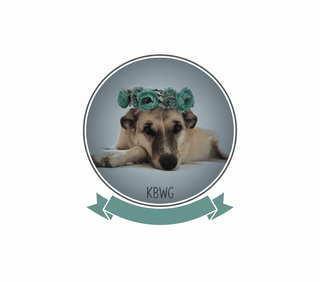

<header class="siteHeader" id="siteHeader">
  <div class="wrap headerRow">
    <a aria-label="בית" class="logo" href="index.html">
      
      <span class="logoText">לקנות ללא אכזריות</span>
    </a>

    <!-- Mobile hamburger (required for the drawer nav) -->
    <button class="navToggle" type="button" aria-label="פתח תפריט" aria-expanded="false">
      <span class="navToggleIcon" aria-hidden="true">☰</span>
      <span class="navToggleText">תפריט</span>
    </button>

    <nav aria-label="ניווט ראשי" class="nav">
      <a class="" href="index.html">בית</a>

      <details class="navGroup">
        <summary>מאגר</summary>
        <div class="navDrop" role="menu" aria-label="מאגר">
          <a class="" href="products.html" role="menuitem">מוצרים</a>
          <a class="" href="israeli-brands.html" role="menuitem">מותגים בישראל</a>
          <a class="" href="recommended-brands.html" role="menuitem">מותגים מחו״ל</a>
          <a class="" href="pharmacy.html" role="menuitem">פארם</a>
        </div>
      </details>

      <details class="navGroup">
        <summary>כלים</summary>
        <div class="navDrop" role="menu" aria-label="כלים">
          <a class="" href="ingredient-detective.html" role="menuitem">בודק רכיבים</a>
          <a class="" href="shopping-calendar.html" role="menuitem">לוח מבצעים</a>
        </div>
      </details>

      <details class="navGroup">
        <summary>מדריכים</summary>
        <div class="navDrop" role="menu" aria-label="מדריכים">
          <a class="" href="vegan-in-israel.html" role="menuitem">טבעוני בישראל</a>
          <a class="" href="hidden-gems-map.html" role="menuitem">Hidden Gems</a>
          <a class="" href="learn.html" role="menuitem">מידע</a>
        </div>
      </details>

      <details class="navGroup">
        <summary>דילים</summary>
        <div class="navDrop" role="menu" aria-label="דילים">
          <a class="" href="todays-top-deals.html" role="menuitem">דילים חמים</a>
          <a class="" href="bundles.html" role="menuitem">מארזים</a>
        </div>
      </details>

      <details class="navGroup">
        <summary>קהילה</summary>
        <div class="navDrop" role="menu" aria-label="קהילה">
          <a class="" href="wall-of-kindness.html" role="menuitem">קיר טוב</a>
        </div>
      </details>

      <details class="navGroup">
        <summary>אודות</summary>
        <div class="navDrop" role="menu" aria-label="אודות">
          <a class="" href="methodology.html" role="menuitem">שיטה</a>
          <a class="" href="about.html" role="menuitem">אודות</a>
          <a class="" href="contact.html" role="menuitem">צור קשר</a>
          <a class="" href="terms.html" role="menuitem">תקנון</a>
        </div>
      </details>
    </nav>
  </div>

  <style>
    /* Grouped nav (v16) — single-level dropdown, fast & mobile-friendly */
    #siteHeader .nav{ overflow: visible; }
    #siteHeader .navGroup{ position: relative; }
    #siteHeader .navGroup > summary{
      list-style: none;
      cursor: pointer;
      display: inline-flex;
      align-items: center;
      gap: 6px;
      padding: 8px 10px;
      border-radius: 14px;
      font-weight: 900;
      color: var(--ink);
      user-select: none;
      border: 1px solid transparent;
    }
    #siteHeader .navGroup > summary::-webkit-details-marker{ display:none; }
    #siteHeader .navGroup[open] > summary{
      background: rgba(157,195,230,.18);
      border-color: rgba(42,91,154,.18);
    }
    #siteHeader .navDrop{
      position: absolute;
      top: calc(100% + 8px);
      right: 0;
      min-width: 210px;
      padding: 8px;
      border-radius: 16px;
      border: 1px solid rgba(31,41,55,.12);
      background: rgba(255,255,255,.96);
      box-shadow: 0 18px 40px rgba(0,0,0,.10);
      display: grid;
      gap: 4px;
      z-index: 2000;
    }
    #siteHeader .navDrop a{
      display: block;
      padding: 10px 10px;
      border-radius: 12px;
      text-decoration: none;
      font-weight: 900;
      color: var(--ink);
    }
    #siteHeader .navDrop a:hover{
      background: rgba(157,195,230,.18);
    }

    /* Mobile: keep dropdowns inside flow so they won't get clipped */
    @media (max-width: 820px){
      #siteHeader .navDrop{
        position: static;
        min-width: unset;
        margin-top: 6px;
        box-shadow: none;
        background: rgba(255,255,255,.86);
      }
      #siteHeader .navGroup{
        width: 100%;
      }
      #siteHeader .navGroup > summary{
        width: 100%;
        justify-content: space-between;
      }
    }

/* Mobile menu stacking hotfix (v25)
   - Fixes iOS/Safari: backdrop-filter on header can trap fixed drawer behind overlay
   - Ensures hamburger + drawer are always above the dim overlay
*/
@media (max-width: 920px){
  #siteHeader.siteHeader{
    z-index: 10005 !important;
    backdrop-filter: none !important;
    -webkit-backdrop-filter: none !important;
  }
  #siteHeader.siteHeader .nav{ z-index: 10006 !important; }
  #siteHeader.siteHeader .navToggle{ position: relative; z-index: 10007 !important; }
  body.menuOpen .navOverlay, body.menuopen .navOverlay{ z-index: 10004 !important; }
}

  </style>
</header>
